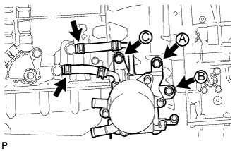

МАСЛЯНЫЙ РАДИАТОР (для моделей с 1GR-FE) > УСТАНОВКА |
| 1. УСТАНОВИТЕ МАСЛЯНЫЙ РАДИАТОР В СБОРЕ (для моделей с масляным радиатором трансмиссии с воздушным охлаждением) |
Закрепите 2 кронштейна масляного радиатора 2 болтами.
 |
Присоедините захваты масляного радиатора к отверстию кронштейна радиатора и центральному подкосу, чтобы закрепить его.
Вверните 3 болта и затяните болты в порядке, показанном на рисунке.
| 2. УСТАНОВИТЕ ТРУБКУ МАСЛЯНОГО РАДИАТОРА № 3 В СБОРЕ (для моделей с масляным радиатором трансмиссии с воздушным охлаждением) |
Проденьте трубку масляного радиатора № 3 через отверстие кронштейна радиатора с задней стороны автомобиля и закрепите ее на кронштейне масляного радиатора болтом.
| 3. ПОДСОЕДИНИТЕ ВПУСКНОЙ ПАТРУБОК МАСЛЯНОГО РАДИАТОРА № 6 И ВЫПУСКНОЙ ПАТРУБОК МАСЛЯНОГО РАДИАТОРА № 6 (для моделей с масляным радиатором трансмиссии с воздушным охлаждением) |
 |
Подсоедините впускной патрубок № 6 и выпускной патрубок № 6 масляного радиатора к масляному радиатору.
| *1 | Метка, нанесенная синей краской |
| *2 | Метка, нанесенная розовой краской |
| *3 | Метка, нанесенная желтой краской |
| *4 | Метка, нанесенная белой краской |
Подсоедините 2 патрубка к трубке масляного радиатора № 3, чтобы закрепить их.
| 4. УСТАНОВИТЕ ТРУБКУ МАСЛЯНОГО РАДИАТОРА № 2 В СБОРЕ |
 |
Не закрепляя, установите патрубок масляного радиатора на кожух вентилятора с помощью болта A. Вверните болт B и затяните его с номинальным моментом затяжки. Затем затяните болт A с номинальным моментом затяжки.
| *A | Для моделей без масляного радиатора трансмиссии с воздушным охлаждением |
| *B | Для моделей с масляным радиатором трансмиссии с воздушным охлаждением |
| 5. ПОДСОЕДИНИТЕ ВПУСКНОЙ ПАТРУБОК МАСЛЯНОГО РАДИАТОРА № 5 И ВЫПУСКНОЙ ПАТРУБОК МАСЛЯНОГО РАДИАТОРА № 5 (для моделей с масляным радиатором трансмиссии с воздушным охлаждением) |
Подсоедините впускной патрубок № 5 и выпускной патрубок № 5 масляного радиатора к трубке масляного радиатора № 2.
Подсоедините 2 патрубка к трубке масляного радиатора № 3, чтобы закрепить их.
| 6. УСТАНОВИТЕ ВПУСКНОЙ ПАТРУБОК МАСЛЯНОГО РАДИАТОРА № 4 И ВЫПУСКНОЙ ПАТРУБОК МАСЛЯНОГО РАДИАТОРА № 4 |
Подсоедините впускной патрубок № 4 и выпускной патрубок № 4 масляного радиатора к трубке масляного радиатора № 2.
Подсоедините 2 патрубка к радиатору, чтобы закрепить их.
| *A | Для моделей без масляного радиатора трансмиссии с воздушным охлаждением |
| *B | Для моделей с масляным радиатором трансмиссии с воздушным охлаждением |
| *1 | Метка, нанесенная желтой краской |
| 7. УСТАНОВИТЕ ВПУСКНОЙ ПАТРУБОК МАСЛЯНОГО РАДИАТОРА № 1 И ВЫПУСКНОЙ ПАТРУБОК МАСЛЯНОГО РАДИАТОРА № 1 (для моделей без масляного радиатора трансмиссии с воздушным охлаждением) |
 |
Закрепите 2 зажима гибких шлангов № 2 с помощью 2 болтов.
Установите впускной патрубок масляного радиатора № 1 и выпускной патрубок масляного радиатора № 1 и закрепите 2 зажима гибких шлангов № 2 с помощью 2 болтов.
| 8. УСТАНОВИТЕ ВПУСКНОЙ ПАТРУБОК МАСЛЯНОГО РАДИАТОРА № 1 И ВЫПУСКНОЙ ПАТРУБОК МАСЛЯНОГО РАДИАТОРА № 1 (для моделей с масляным радиатором трансмиссии с воздушным охлаждением) |
Закрепите 2 зажима гибких шлангов № 2 с помощью 2 болтов.
Подсоедините концы 2 патрубков масляного радиатора к соответствующим штуцерам патрубков масляного радиатора, предварительно закрепив их вручную.
Сомкните 2 зажима гибких шлангов № 2 и вверните 2 болта.
С помощью разрезной головки закрепите впускной и выпускной патрубки.
| 9. УСТАНОВИТЕ ВПУСКНОЙ ПАТРУБОК МАСЛЯНОГО РАДИАТОРА № 3 И ВЫПУСКНОЙ ПАТРУБОК МАСЛЯНОГО РАДИАТОРА № 3 |
Подсоедините впускной патрубок № 3 и выпускной патрубок № 3 масляного радиатора к впускному патрубку № 1 и выпускному патрубку № 1 масляного радиатора.
| *1 | Метка, нанесенная синей краской |
| *2 | Метка, нанесенная розовой краской |
| *3 | Метка, нанесенная белой краской |
Подсоедините 2 патрубка к трубке масляного радиатора № 2, чтобы закрепить их, а затем проденьте 2 патрубка через зажим гибкого шланга № 1 и сомкните зажим.
| 10. УСТАНОВИТЕ МАСЛЯНЫЙ РАДИАТОР ТРАНСМИССИИ В СБОРЕ (для моделей без воздушного масляного радиатора трансмиссии) |
Покройте 2 новых кольцевых уплотнения трансмиссионной жидкостью и установите их в канавку масляного радиатора трансмиссии.
Совместите масляный радиатор трансмиссии с термостатом трансмиссионного масла и скрепите их с помощью 3 болтов.
| *1 | Новое кольцевое уплотнение |
Подсоедините впускной шланг масляного радиатора № 1 и выпускной шланг масляного радиатора № 1 к термостату трансмиссионной жидкости.
Подсоедините 2 шланга к штуцерам патрубков масляного радиатора.
|  |
Установите масляный радиатор трансмиссии вместе с термостатом трансмиссионного масла и предварительно закрепите их болтом A. Вверните болты B и C и затяните их с номинальным моментом. Затем затяните болт A с номинальным моментом затяжки.
Подсоедините 2 перепускных шланга охлаждающей жидкости к масляному радиатору трансмиссии.
| *1 | Метка, нанесенная белой краской |
| *2 | Метка, нанесенная желтой краской |
| 11. ПОДСОЕДИНИТЕ ВПУСКНОЙ ПАТРУБОК МАСЛЯНОГО РАДИАТОРА № 2 И ВЫПУСКНОЙ ПАТРУБОК МАСЛЯНОГО РАДИАТОРА № 2 (для моделей без масляного радиатора трансмиссии с воздушным охлаждением) |
Подсоедините впускной шланг масляного радиатора № 2 и выпускной шланг масляного радиатора № 2 к термостату трансмиссионной жидкости.
| *1 | Метка, нанесенная синей краской |
| *2 | Метка, нанесенная розовой краской |
Подсоедините 2 патрубка в впускному патрубку масляного радиатора № 1 и выпускному патрубку масляного радиатора № 1, чтобы закрепить их.
| 12. ДОБАВЬТЕ ОХЛАЖДАЮЩУЮ ЖИДКОСТЬ ДВИГАТЕЛЯ |
Затяните 2 пробки сливных кранов блока цилиндров.
Затяните пробку сливного крана радиатора вручную.
Долейте охлаждающую жидкость.
| Параметр / Устройство | Заданные условия | |
| Для моделей с автоматической трансмиссией | Для моделей без заднего подогревателя | 10,5 литра (11,1 кварты США, 9,2 английской кварты) |
| Для моделей с задним подогревателем | 12,3 литра (13,0 кварты США, 10,8 английской кварты) | |
| Для моделей с подогревателем | 12,8 литра (13,5 кварты США, 11,2 английской кварты) | |
| для моделей с механической трансмиссией | Для моделей без заднего подогревателя | 10,7 литра (11,3 кварты США, 9,4 английской кварты) |
| Для моделей с задним подогревателем | 12,5 литра (13,2 кварты США, 11,0 английской кварты) | |
Медленно налейте охлаждающую жидкость в расширительный бачок радиатора до отметки "F".
Установите пробку расширительного бачка.
Установите на место пробку радиатора.*1
Запустите двигатель и сразу же остановите его.*2
Подождите примерно 10 с. Затем снимите пробку радиатора и проверьте уровень охлаждающей жидкости. Если уровень охлаждающей жидкости снизился, добавьте охлаждающую жидкость.*3
Повторяйте шаги *1, *2 и *3 до тех пор, пока уровень охлаждающей жидкости не снизится.
Установите на место пробку радиатора.*4
Настройте систему кондиционирования, как описано ниже.*5
| Параметр / Устройство | Условие |
| Скорость вентилятора | Любая настройка, кроме OFF (ВЫКЛ) |
| Температура | В сторону "WARM" |
| Переключатель системы кондиционирования | Выкл |
Запустите двигатель, прогрейте его настолько, чтобы открылся термостат, а затем дайте поработать в таком состоянии несколько минут, чтобы прокачать охлаждающую жидкость.*6
Остановите двигатель и подождите, пока охлаждающая жидкость не охладиться до температуры окружающего воздуха. Затем снимите пробку радиатора и проверьте уровень охлаждающей жидкости.*7
Если уровень охлаждающей жидкости снизился, добавьте охлаждающую жидкость и прогрейте двигатель до открывания термостата.*8
Если уровень охлаждающей жидкости не снизился, убедитесь, что уровень жидкости в расширительном бачке радиаторе находится на линии F.
Если уровень охлаждающей жидкости ниже линии F, повторите шаги с *4 по *8.
Если уровень охлаждающей жидкости выше линии F, слейте охлаждающую жидкость до линии F.
| 13. ОТРЕГУЛИРУЙТЕ УРОВЕНЬ ЖИДКОСТИ ДЛЯ АВТОМАТИЧЕСКОЙ ТРАНСМИССИИ |
Отрегулируйте уровень жидкости для автоматической трансмиссии (Нажмите здесь).
| 14. ПРОВЕРЬТЕ, НЕТ ЛИ УТЕЧЕК ОХЛАЖДАЮЩЕЙ ЖИДКОСТИ |
Заполните радиатор охлаждающей жидкостью, а затем подсоедините приспособление для опрессовки системы охлаждения и проверки пробки радиатора.
Прогрейте двигатель.
С помощью приспособления для опрессовки системы охлаждения и проверки пробки радиатора увеличьте давление в радиаторе до 123 кПа (1,3 кгс/см2, 18 фунтов на кв. дюйм) и убедитесь, что давление не падает.
Если давление снижается, проверьте на наличие утечек шланги, радиатор и насос системы охлаждения. Если нет следов или признаков утечки внешней охлаждающей жидкости, проверьте сердцевину отопителя, блок цилиндров и головку блока цилиндров.
| 15. УСТАНОВИТЕ НАКЛАДКУ ПЕРЕДНЕГО БАМПЕРА (для моделей с масляным радиатором трансмиссии с воздушным охлаждением) |
Установите облицовку переднего бампера (Нажмите здесь).
| 16. УСТАНОВИТЕ УПЛОТНЕНИЕ № 1 МЕЖДУ ФАРТУКОМ ПРАВОГО ПЕРЕДНЕГО КРЫЛА И РАМОЙ |
Закрепите уплотнение между фартуком переднего крыла и рамой № 1 5 фиксаторами.
| 17. УСТАНОВИТЕ УПЛОТНЕНИЕ ФАРТУКА ПРАВОГО ПЕРЕДНЕГО КРЫЛА |
Закрепите уплотнение фартука переднего крыла 5 фиксаторами.
| 18. УСТАНОВИТЕ ЗАЩИТУ КАРТЕРА ДВИГАТЕЛЯ № 1 В СБОРЕ |
 |
Присоедините защиту картера двигателя к кузову автомобиля, как показано на рисунке.
Вверните 4 болта.
| 19. УСТАНОВИТЕ ЗАДНЮЮ ЗАЩИТУ КАРТЕРА ДВИГАТЕЛЯ В СБОРЕ |
Установите заднюю защиту картера двигателя и закрепите ее 4 болтами.